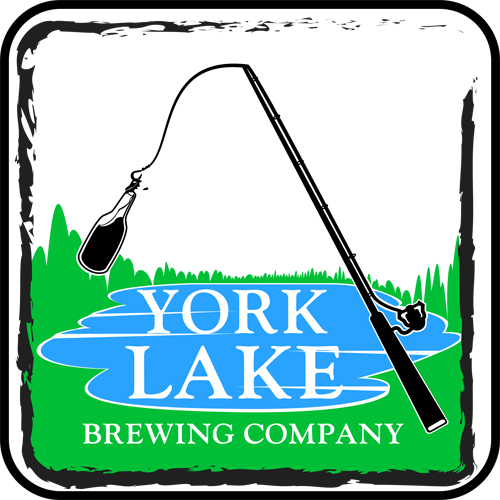

Check us out at the 8th Annual Chili Cook Off and Homebrew Competition in March!

York Lake Brewing
Craft Beer
Brewmaster Paul Ponzeka has just started honing his skills after years of experience as a Amateur Beer Connoisseur
Check us out at the 8th Annual Chili Cook Off and Homebrew Competition in March!
Brewmaster Paul Ponzeka has just started honing his skills after years of experience as a Amateur Beer Connoisseur